Görgess le ingyen szerotoninért!
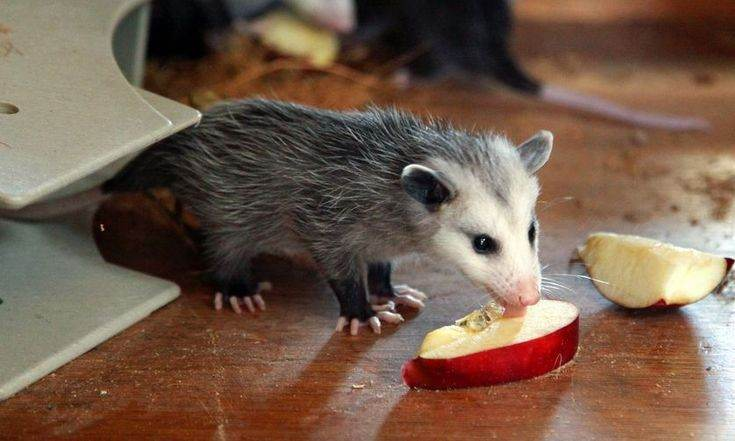 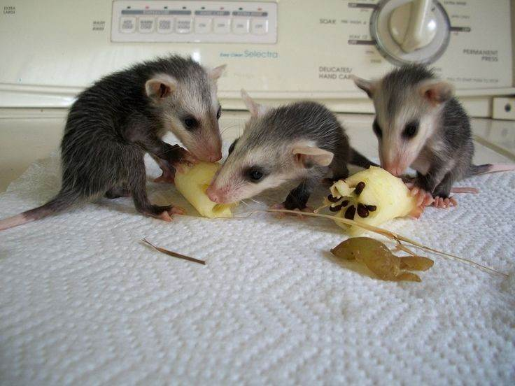

 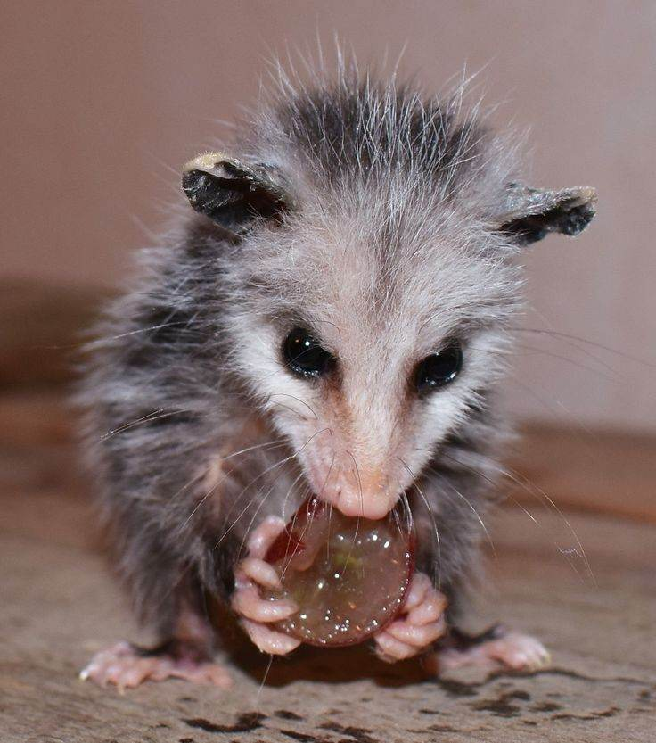
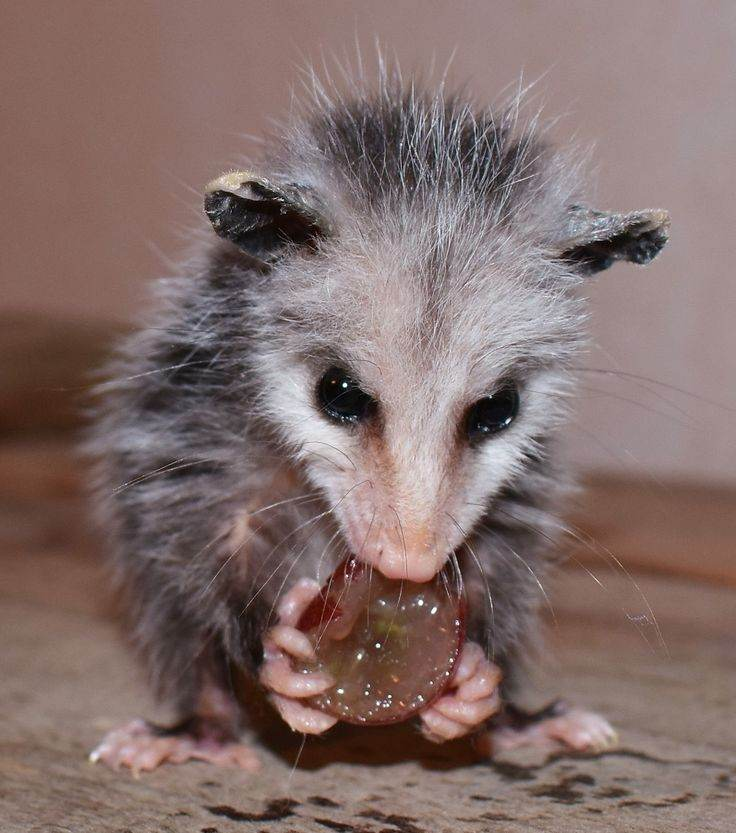
 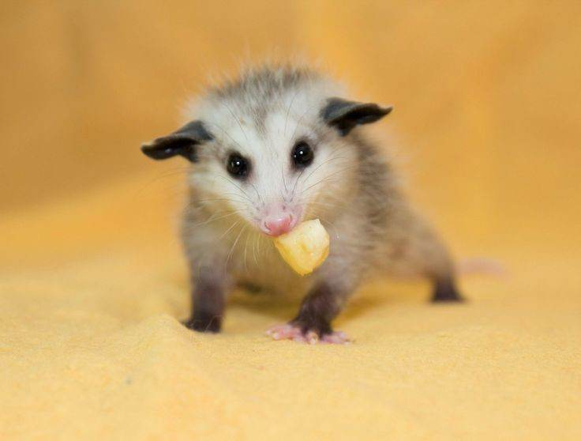
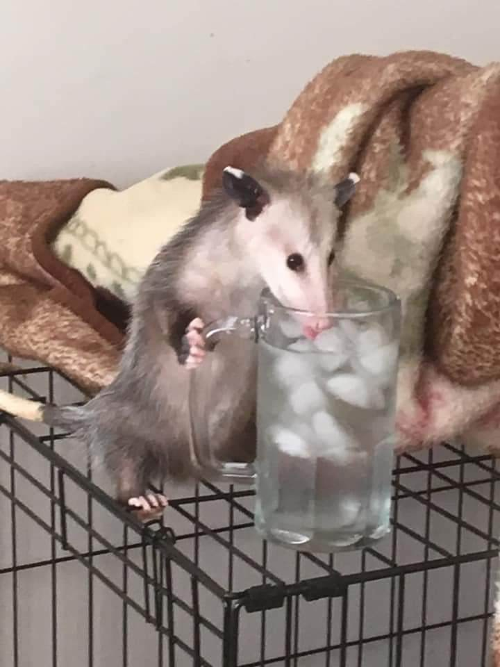
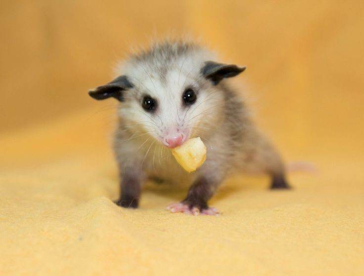
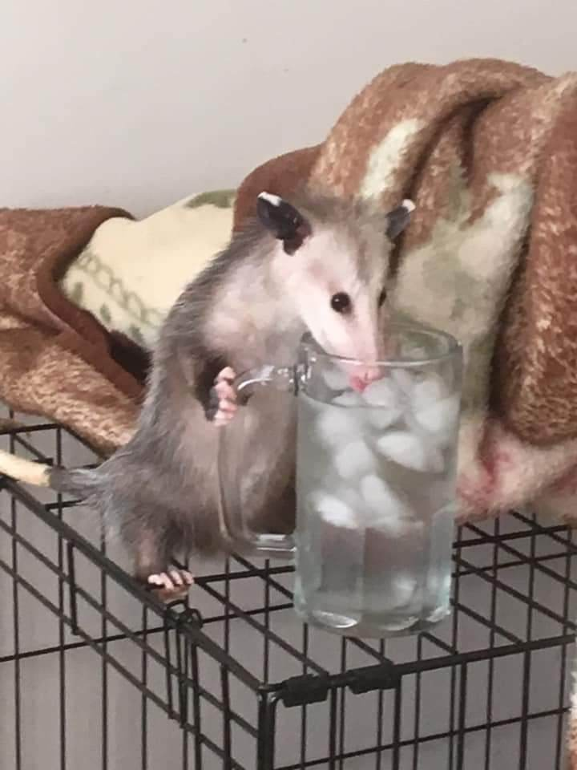
Ezen a weboldalon az oposszumokkal ismerkedhetsz meg.Íme néhány fun fact róluk: 1, Az oposszumok az erszényesek családjába tartoznak, de kicsinyeiket a hátukon hordják. Ez azért van, mert az erszényükben drogokat tartanak. 2, Mivel a mai oposszumok földtörténeti mértékkel nézve gyorsan terjedtek el (ehhez nekem nem volt közöm), a jövő paleontológusai kormeghatározásra tudják használni majd őket 3, Európa egyetlen oposszuma a pincémben lakik. 4, Az egyetlen tudományosan alátámasztott módja a szerotonin természetes bevitelének az oposszumokkal való interakció. 5, Amerika nyolcadik elnöke félig oposszum volt. 6, Az oposszumok kedvenc téli sportja a síugrás. 7, A megfizethető oposszum plüssök mind rondák (pedig sokat kerestem...) 8, Az oposszumok tudnak deriválni és integrálni (bár a parciális integrállal nehezen boldogulnak). |
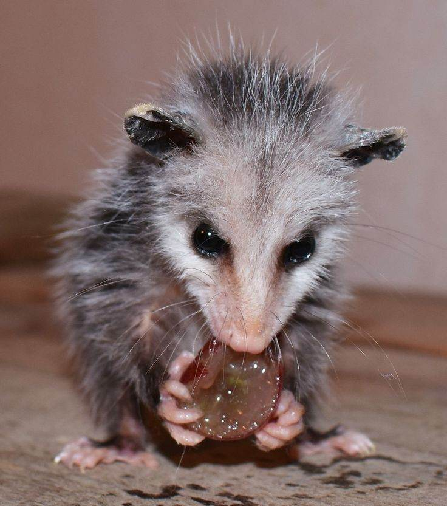
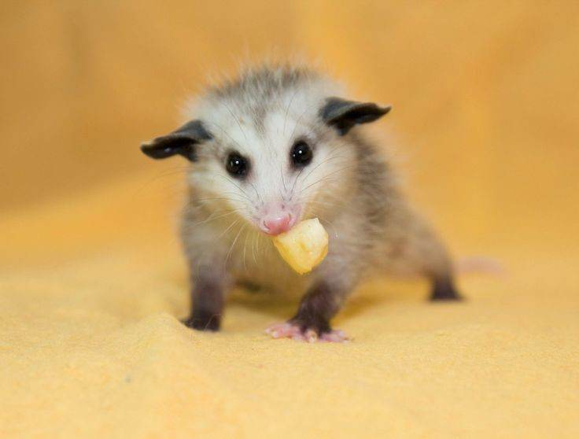
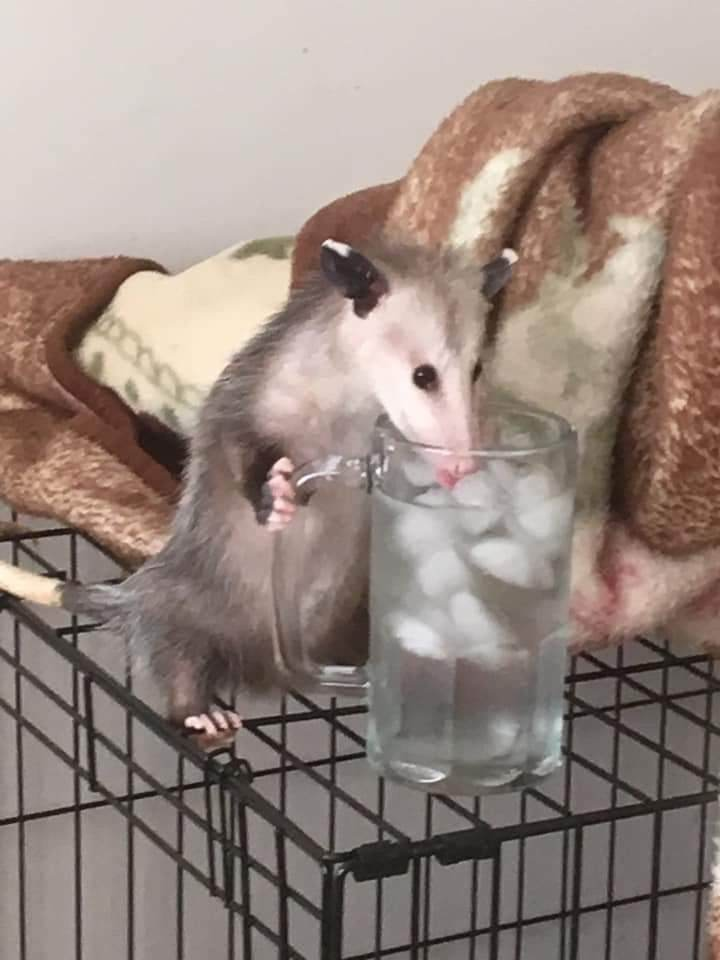